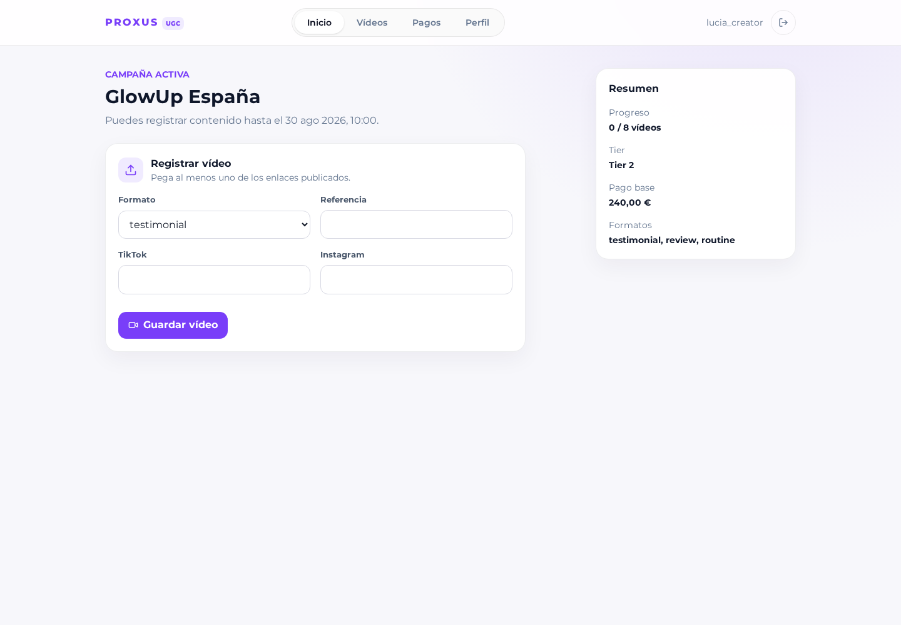
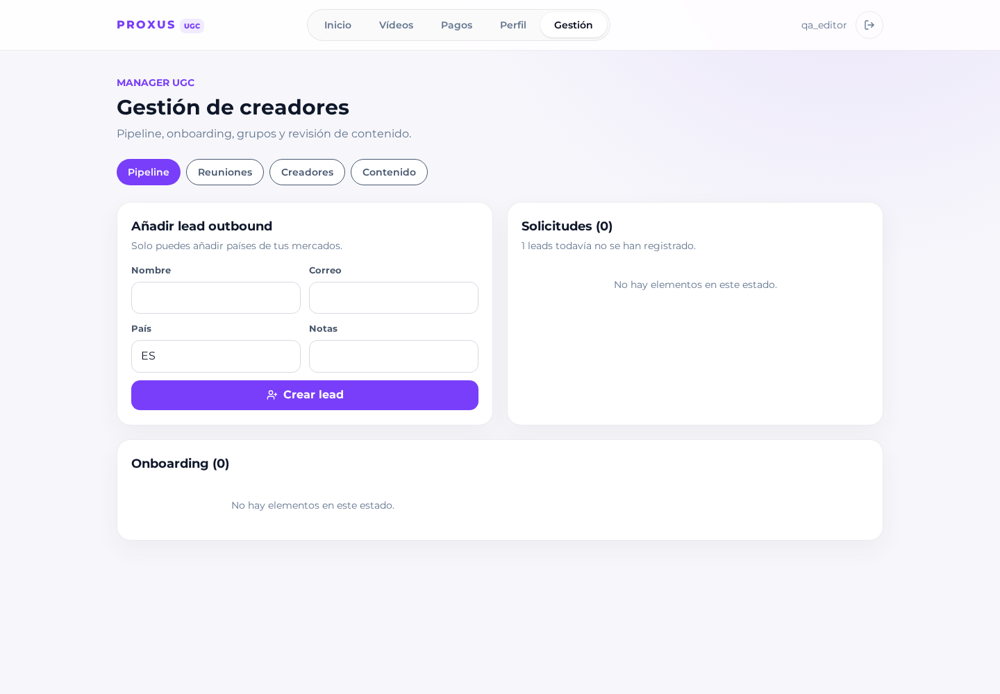
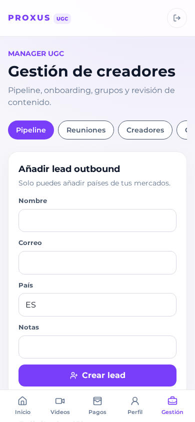
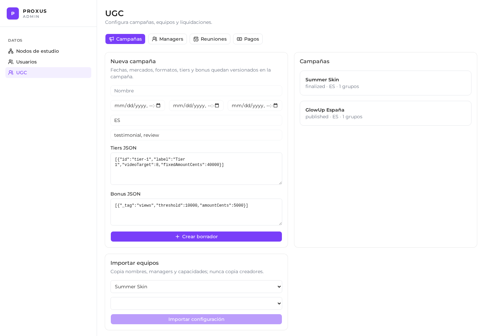
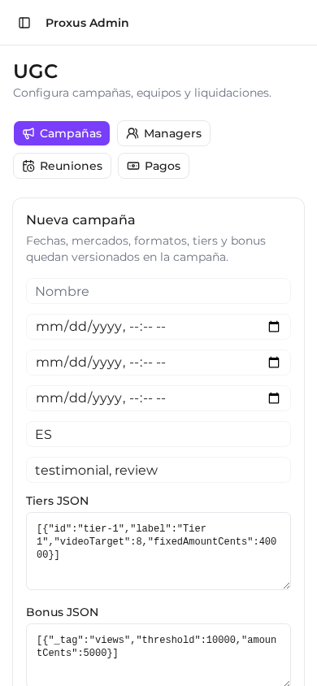

React + Effect Atom
Consulta workspace, renderiza estados observables y despacha comandos.
PR #38 · Informe técnico
La PR implementa estados y acciones como comandos tipados sobre un servicio Effect, con repositorios portables, persistencia Drizzle, autorización por actor y un workspace derivado para cada interfaz.
01 · Arquitectura
El bounded context ugc-management conserva el mismo nombre en contratos, dominio, infraestructura, transporte y frontend core. Cada aplicación compone únicamente las piezas que necesita.
Consulta workspace, renderiza estados observables y despacha comandos.
Sesión, decoding, handler y traducción de errores públicos.
Autorización, transición, coordinación y cálculos de negocio.
Memory, PGlite, PostgreSQL/Drizzle y transacciones.
/ugc/; arquitectura React independiente./admin/ugc, con adapters propios.02 · Ejecución
La respuesta de una mutación ya contiene el estado visible posterior. Effect Atom reemplaza/invalida la consulta, de modo que todas las pantallas dependientes observan el mismo resultado.
La pantalla construye una clase de comando compartida.
HTTP valida el discriminante y resuelve AccountId/rol admin.
Carga estado, verifica transición, scope y reglas cruzadas.
Todos los inserts/updates confirman juntos o hacen rollback.
Se relee y filtra la vista para creator, manager o admin.
03 · FSM y comandos
ugc_users.status conserva la transición estable y data es una unión discriminada. LeadData, ApplicantData, OnboardingData, TrialData, CreatorData, ManagerData y TerminalData impiden mezclar atributos de etapas incompatibles.
Status + data discriminado + version.
Proyección para presentación; no requiere jobs temporales.
| Familia | Comandos implementados | Actores |
|---|---|---|
| Captación | SubmitApplication, CreateOutboundLead, AcceptApplication, RejectApplication | Creator / Manager / soporte Admin |
| Onboarding | CompleteRequirement, GenerateContract, SignContract, RegisterSocialAccount | Creator / Manager |
| Reuniones | CreateMeetSlot, ReserveMeet, EditMeet, RecordMeetAttendance | Creator / Manager / Admin editor |
| Trial | StartTrial, EvaluateTrial | Manager / soporte Admin |
| Managers | ConfigureManager, DisableManager | Admin |
| Campañas | CreateCampaign, PublishCampaign, CreateGroup, ImportGroupConfiguration, AssignCreatorToGroup | Admin / Manager |
| Contenido | SubmitVideo, ReviewVideo, RefreshVideoMetrics, FinalizeCampaign | Creator / Manager / soporte Admin |
| Pagos | GeneratePayments, AdjustPayment, MarkPaymentPaid | Admin |
| Ciclo de cuenta | SuspendCreator, ResumeCreator, ExitCreator | Manager / Admin |
04 · Invariantes
Los botones muestran el camino feliz, pero el service vuelve a validar cada supuesto. Las restricciones estructurales también tienen checks, índices y foreign keys en PostgreSQL.
05 · Persistencia
JSONB se limita a datos variables/versionados. Las relaciones que soportan reglas, consultas e histórico permanecen normalizadas.
| Tabla | JSONB | Índices / constraints destacados |
|---|---|---|
| ugc_users | data + dataVersion | Cuenta/email únicos, type/status pair, country, optimistic version. |
| ugc_campaigns | countries, formats, tiers, bonusRules | Fechas estrictamente ordenadas; status/dates index. |
| ugc_groups | — | Nombre único por campaña, manager FK, capacity > 0. |
| ugc_group_members | — | Unique group/creator e índice por creator. |
| ugc_meets | — | Reservation check, duración positiva, índices de agenda. |
| ugc_videos | — | Al menos un link, status y creator/campaign indexes. |
| ugc_video_data | — | Views no negativas, source tipado, video/capturedAt. |
| ugc_payments | breakdown financiero | Unique creator/campaign y status index. |
06 · API y scoping
Se evita una API CRUD por entidad. Workspace lee una proyección coherente; Commands ejecuta comportamiento y devuelve esa misma proyección actualizada.
Creator/Manager autenticado, filtrado por actor.
Unión discriminada de 31 comandos; errores 403/404/409/422/500.
Workspace global tras AccessControl administrator.
Comandos administrativos con doble autorización.
Perfil, managers compatibles, reuniones reservables/propias, memberships, campañas, vídeos, métricas y pagos propios.
Grupos propios, agenda propia, creators vinculados, candidatos de mercado y contenido del equipo.
Estado completo para configuración y operación global.
07 · Ports
Los servicios externos quedan detrás de capacidades pequeñas. El MVP puede probarse de forma determinista y la integración real puede añadirse sin cambiar comandos o handlers.
Genera UUIDs; en tests permite secuencias deterministas.
Renderiza el contrato usando el generador de referencia de /tmp y guarda snapshot.
Implementación mock estable hoy; seam preparado para RapidAPI.
08 · Testing
Las pruebas cubren comportamiento observable y restricciones, no detalles internos de React o Effect Atom.
Inbound completo; outbound + dos ausencias; reject; suspend/resume/exit; importación.
Mercados, ownership, capacidad, overlap, campañas futuras y compatibilidad de manager.
Round-trip de ocho entidades, stale writes, check de reuniones y rollback.
APIs pública/admin, OpenAPI, 401 anónimo y matriz student/editor/admin.
Cinco estados del inicio, CSV y logout server-side.
Effect diagnostics, TS, Oxlint, React Doctor, boundaries, Knip y workspace contracts.
pnpm validate:pr y builds UGC/Admin/Storybook.
11 smoke checks sobre PostgreSQL: SPAs, fallbacks, Storybook y OpenAPI.
09 · Evidencia UI
Creator se renderiza con los componentes, shell y rutas de producción sobre fixtures de dominio deterministas; Manager y Admin se capturan desde sus aplicaciones en ejecución. El informe de producto contiene las 60 capturas.
Estado derivado desde status, fechas, membership y campaña.

Solo candidatos y creators que el workspace permite gestionar.


Configuración global sobre la API administrativa existente.


10 · Preview
La preview es un composition root exclusivo: un proceso Effect sirve ambas APIs, tres SPAs y Storybook desde Cloud Run, contra una base PostgreSQL dedicada.
Acceso por grupo, identidad sin claves JSON y sin invoker anónimo al finalizar el deploy.
/ugc/*UGC SPAIncluye fallback de rutas anidadas/admin/*Admin SPAGestión UGC integrada/api/*Public APIAuth + Creator/Manager/admin-api/*Admin APIAccessControl administrator/ui/*StorybookPantallas reales de Creator con fixtures deterministasPostgreSQL 17DB por PRMigraciones y seeds sintéticos11 · Límites
Los seams existen donde aportan testabilidad inmediata; no se añaden capas vacías para capacidades hipotéticas.